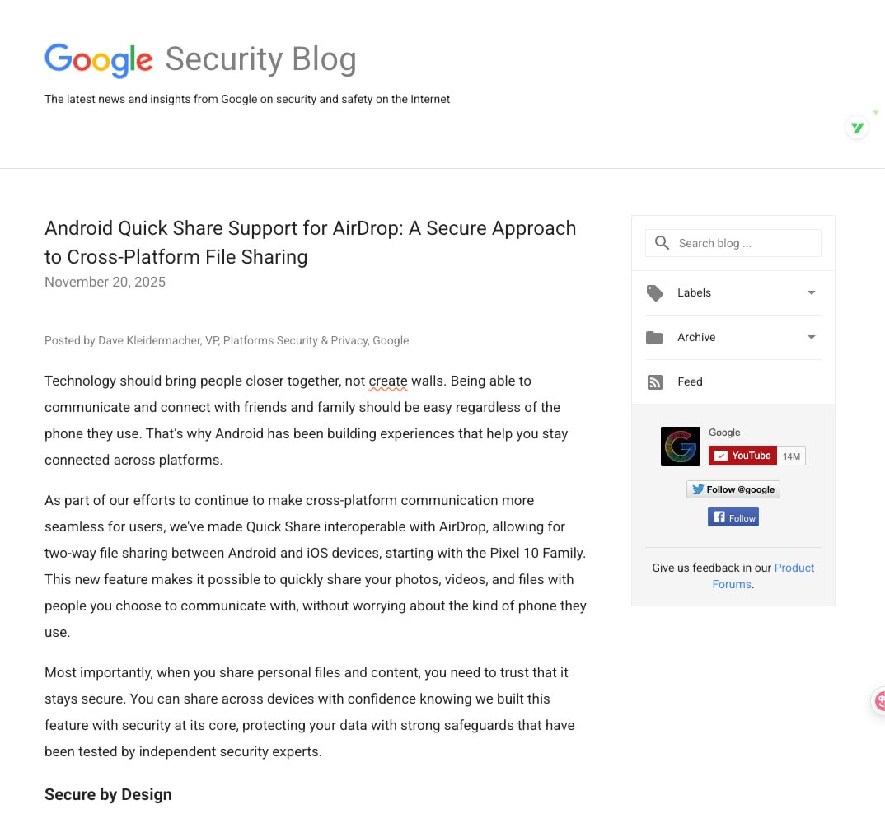

谷歌之前在 Pixel 10 系列上使用 Quick Share 兼容了 AirDrop 双向互传文件，但当时很多人并没有搞清楚谷歌是如何破解苹果 AirDrop 协议的。
现在谷歌直接自己发了一篇技术 blog，解释了其中使用的哪些小技巧以及未来的发展计划。这应该是谷歌第一次公开解析这个功能，以及如何通过逆向苹果技术栈来实现第一方功能；这在很大程度上说明了 Google 并不将其视为一种对苹果功能的侵害，反而将其视为一种拆除围墙的行为。
整个技术栈使用 Rust 编写，从编译期就消除了内存破坏漏洞。同时，谷歌自己做了第三方渗透测试报告，确保这个漏洞不会被其他有心之人利用。但目前 Quick Share 与 AirDrop 互传目前只支持 AirDrop 的十分钟内对所有人开放模式，也就是 iPhone 用户在 iOS 16.2 之后被苹果"降级"过的那个临时开放窗口。仅联系人模式没有打通。
Dan Boneh （斯坦福密码学教授，业界最有公信力的安全学者之一）的结论是："鼓励 Google 和 Apple 在这方面更多合作"。这算是把球踢回给苹果：现在如果苹果继续拒绝合作（比如不开放 Contacts Only 模式、或者用系统更新去阻断这个兼容层），那么"破坏互操作性"的责任就完全落在苹果头上了。Google 已经把自己塑造成那个"愿意合作、技术上也准备好了"的一方。
https://t.co/6gXysL6LSD
现在谷歌直接自己发了一篇技术 blog，解释了其中使用的哪些小技巧以及未来的发展计划。这应该是谷歌第一次公开解析这个功能，以及如何通过逆向苹果技术栈来实现第一方功能；这在很大程度上说明了 Google 并不将其视为一种对苹果功能的侵害，反而将其视为一种拆除围墙的行为。
整个技术栈使用 Rust 编写，从编译期就消除了内存破坏漏洞。同时，谷歌自己做了第三方渗透测试报告，确保这个漏洞不会被其他有心之人利用。但目前 Quick Share 与 AirDrop 互传目前只支持 AirDrop 的十分钟内对所有人开放模式，也就是 iPhone 用户在 iOS 16.2 之后被苹果"降级"过的那个临时开放窗口。仅联系人模式没有打通。
Dan Boneh （斯坦福密码学教授，业界最有公信力的安全学者之一）的结论是："鼓励 Google 和 Apple 在这方面更多合作"。这算是把球踢回给苹果：现在如果苹果继续拒绝合作（比如不开放 Contacts Only 模式、或者用系统更新去阻断这个兼容层），那么"破坏互操作性"的责任就完全落在苹果头上了。Google 已经把自己塑造成那个"愿意合作、技术上也准备好了"的一方。
https://t.co/6gXysL6LSD
